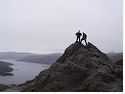
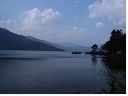

Walkabout Scotland
Inspirational Walking and Hiking Holidays Throughout Scotland
Day hiking tours
Escape to the hills for a day with one of our fantastic hiking tours from Edinburgh. These hiking tours are run each day to some of the most scenic mountainous areas of Scotland's Southern Highlands, all within 2.5 hours drive/train ride from Edinburgh. All are within the capabilities of moderately fit people and you needn't be an experienced hillwalker.
We provide: Pick up and transport from Edinburgh, lunch on the hike, qualified mountain leaders and entertainment and excitement all day!
Monday - Ben Vrackie
A full day out on a hill, accessible by train - Ben Vrackie looms above the town of Pitlochry, climbed by an easy trail leading up to wide ranging views from thesummit. 8km/5 miles, 841m (2850ft)
Full Day Tour - departing Edinburgh 08.00 - £50 (concessions available)
Wednesday - Ben A'an
A fine and easy hike up through inspiring woodland to an open, airy top with a fantastic view over Loch Katrine. 8km/5 miles, 485 m (1450ft) Half-Day Tour - departing Edinburgh 12.30 - £35 (concessions available).
Friday - Lowther Hill

Lowther Hill is a mere 1000ft ascent on the Southern Upland Way, starting and finishing at Wanlockhead, the highest village in Scotland - 8km/5 miles, 308 m (1000ft), easy trail, some road. Half-Day Tour - departing Edinburgh 12.30 - £35 (concessions available)
Saturday - Ben Lomond
A long and steady hike up this famous mountain, overlooking Loch Lomond. 10km, 6 miles, 974m (3195ft). Full Day Tour - departing Edinburgh 08.30 - £50 (concessions available)
Minimum booking
Trips are only available for groups of 4 or more persons only
Departure
All hiking day tours depart 8:30am, apart from Saturday hill walking tours which depart at 8.00am. Half day tours depart 12:30. Departure from the corner of Waverley Bridge and Market Street Edinburgh, near the Tattoo Office and outside Waverley Train Station.
Equipment:
You will need to bring walking gear such as waterproof jacket, warm clothing, hat and good footwear. If you lack suitable equipment please let us know as this can be supplied, although boot hire is £2.50 per day. Also bring water
Book online now!
© 2013 Walkabout Scotland Contact Us